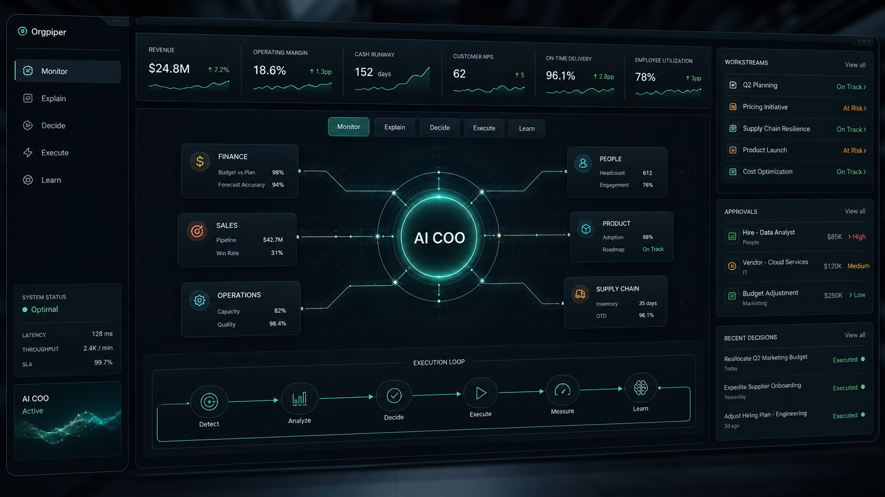

OP-01 Sensing
Business Monitor
Watches goals, KPIs, risks, commitments, handoffs, and exceptions across the enterprise.
Alwayslistening for drift
Orgpiper is the constructive piper for the modern organization: an AI Employee that monitors operating metrics, explains what changed, coordinates action, and guides teams toward the outcome they actually chose.

It turns the noise of the organization into a clear operating melody. Unlike the old myth, this piper is constructive: guiding teams toward outcomes the business has explicitly chosen.
Watches goals, KPIs, risks, commitments, handoffs, and exceptions across the enterprise.
Explains why the business moved and ranks interventions by expected operating impact.
Guides owners, approvals, workflows, and follow-ups through governed action paths.
Remembers what was tried, what worked, what failed, and how future decisions should change.
Orgpiper pipes the right signal to the right part of the organization, then follows the work from decision to action to learning.
Track goals, metrics, commitments, exceptions, and operating drift.
Reason about causes, dependencies, owners, timing, and business context.
Rank interventions by expected outcome impact and confidence.
Coordinate approved workflows, handoffs, follow-ups, and escalation paths.
Measure what happened and improve the operating model.
The stack makes Orgpiper more than a chat interface: it is grounded in enterprise understanding, governance, causality, and outcome feedback.
DatacentrIQ creates Orgtwins and decision intelligence. Orgpiper applies them as an AI COO, guiding work through the enterprise until the numbers change.
Pick the operating outcome that matters this quarter. Orgpiper will guide the organization toward it with clear signals, coordinated action, and measurable learning.